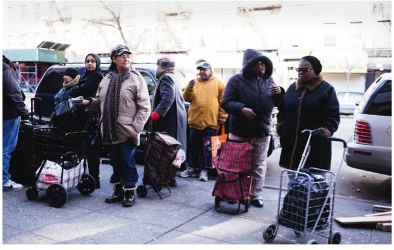

New York City has become increasingly unequal; how is it affecting its residents?
The end of the pandemic saw an unprecedented rise in poverty levels within New York City.
New York residents in line to get groceries from a local food pantry. Photo from Food Bank of New York City.
Published on:
In 2022, New York City’s overall poverty rate jumped up five percent from 18% to 23%, according to Robinhood’s annual report on the state of poverty and disadvantage in New York. That percentage is one of the highest rates recorded during the 21st century. Additionally, that percentage is nearly double the national average at 12%.
After pandemic-era restrictions and income support subsided, many people were left to once again fend for themselves financially. For the more well-off people in the city, the pandemic was merely a small bump in the road and life as normal resumed. However, for those who had small businesses that shut down due to lack of funding and support during the quarantine, they had to find out how they would make ends meet at the most basic level.
The majority of those people who have been struggling financially are minorities and people of color. Consequently these people also live in historically disadvantaged boroughs and communities such as The Bronx and even some parts of Manhattan. While the city as a whole has issues when it comes to inequity, diving deeper into the boroughs reveals a larger level of inequality that pervades different communities.
Despite New York having one of the highest median incomes in the country, that wealth isn’t spread proportionately throughout the city. More than 1.5 million adult New Yorkers and nearly 420,000 children lived in poverty during 2022. Those figures represent about 25% of the total population of adults and children within the city respectively, and those numbers increased significantly from 1.3 million adults and 260,000 children in poverty from the year prior.
The number of those in poverty being significantly more than it was during the peak of the pandemic is important because it paints a picture of how important the pandemic-era governmental support was for people. Additionally, it also shows how people struggled to get on their feet once those policies were lifted.
Since many people were reliant on stimulus checks and the like, they weren’t ready for the city’s plans to recoup the economic losses it saw during the pandemic. 2022 saw rent costs in the city become some of the highest in the country. Additionally, historic levels of inflation saw the cost of everyday necessities rise and record levels.
One of those necessities for people is food. For many, food hardship and insecurity is one of the biggest challenges, especially for those in underserved and minority communities. Government assistance programs such as SNAP have helped those people put food on the table in the past. But during the pandemic and afterwards, people turned to a new alternative to feed their families.
New Yorkers began using food pantries across a three year period more than they are in a single year in that time frame, according to Anastasia Koutavas, a research analyst at Columbia University’s Center on Poverty and Social Policy. Through Koutavas’ research, she’s found that when diving deeper to a borough by borough basis, the needs for food pantries vary.
“We find that rates of food pantries are also much higher in the Bronx and they are in Manhattan, especially when we're looking at single year periods. In a single year, rates of food pantries are higher in the Bronx and Brooklyn and Queens than they are in Manhattan,” Koutavas said. “But when we expand and look at a three year period, this is especially true of the Bronx, where about 45% of New Yorkers living in the Bronx are utilizing a food pantry in a year period compared to about 32% of New Yorkers, of those living in Manhattan.”
“I think some of those differences definitely have to do with access and access to resources, like the prevalence of supermarkets and affordability of food and healthy food. And for many New Yorkers, like food pantries are, you know, for I think there's like an idea that food pantries might be like an emergency resource, but for a lot of people, when you back up and you find that a lot of people are using them, and over like, a three year period, and for longer periods of time, it's less so an emergency, but sometimes something that is just the most accessible option.”
Koutavas also mentioned that nearly one out of every two people using food pantries were also receiving SNAP benefits. But even looking at just the boroughs may paint an incomplete picture of inequality in New York City.
Manhattan is generally considered to be one of the wealthier boroughs in the city in large part due to the investment in shopping, businesses and overall development to attract tourists in the downtown areas. However, when taking a look at each individual neighborhood within Manhattan and the number of people who are using governmental assistance, it is clear where the money in the borough resides and where it tails off at.
The southernmost part of Manhattan is the Financial District and is recognized as 101. The northernmost part of the borough is Washington Heights/Inwood and is 112. The difference between the amount of people who are receiving SNAP benefits is well over a million people, with 112 having a total of 1,122,142 recipients of SNAP over a five year period.
Generally speaking, the higher up one goes in Manhattan, the more unequal things get as far as income and the need for assistance. One of the few cases where that isn’t the case is Chinatown, which is 103. That area usually has ten times more recipients of SNAP, cash assistance, and other forms of government assistance than a neighborhood geographically above it such as Midtown, which is labeled 105.
As people continue to recover from the pandemic and policies begin to shift in terms of lowering inflation rates and making things more affordable, people will be able to lessen the need for government assistance. But in the long term, the city will have a lot of work to do before New York City becomes anywhere close to an equal city in terms of economy and getting rid of the highest poverty rate in a generation.